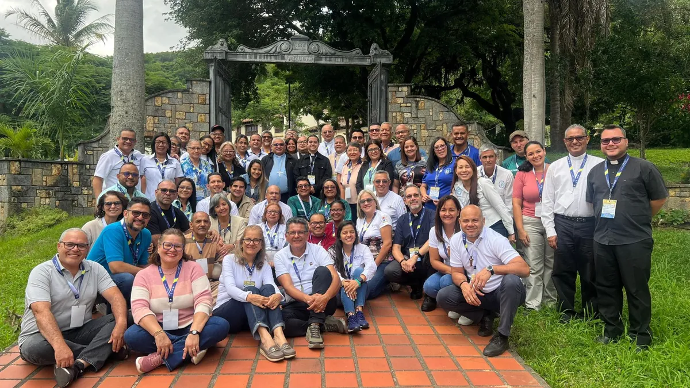
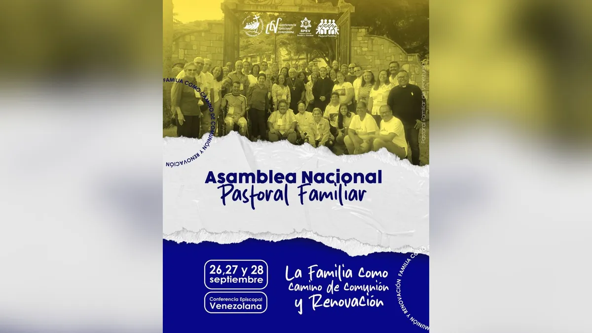
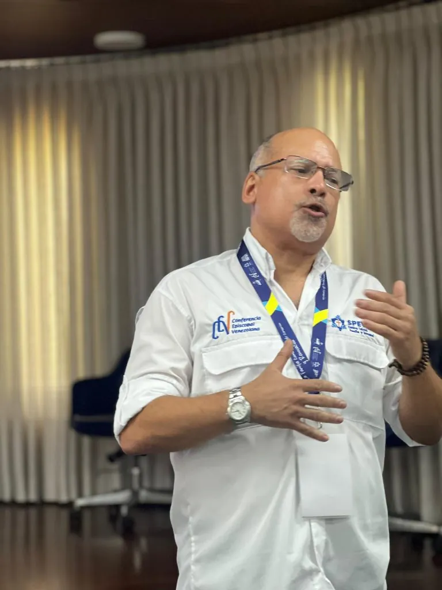
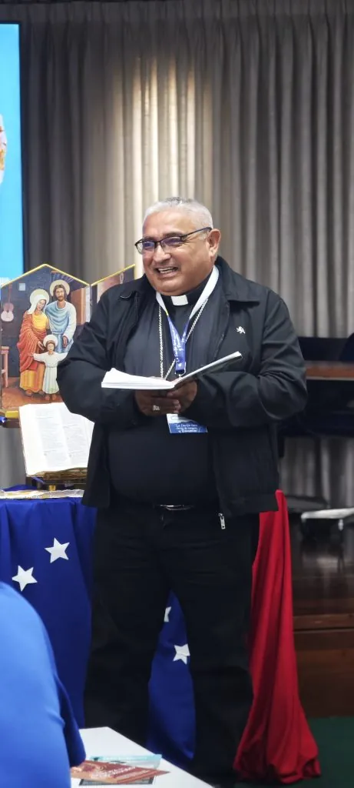
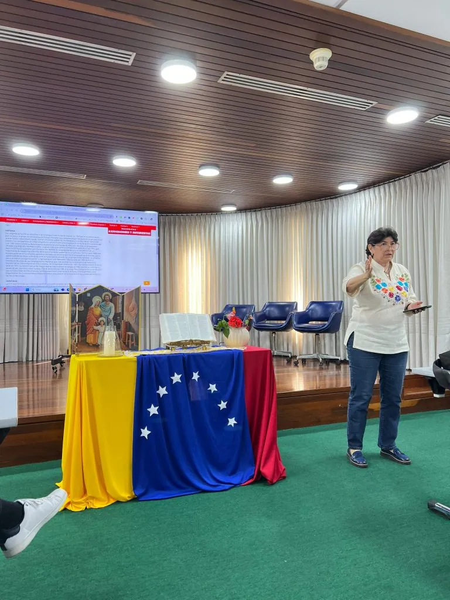
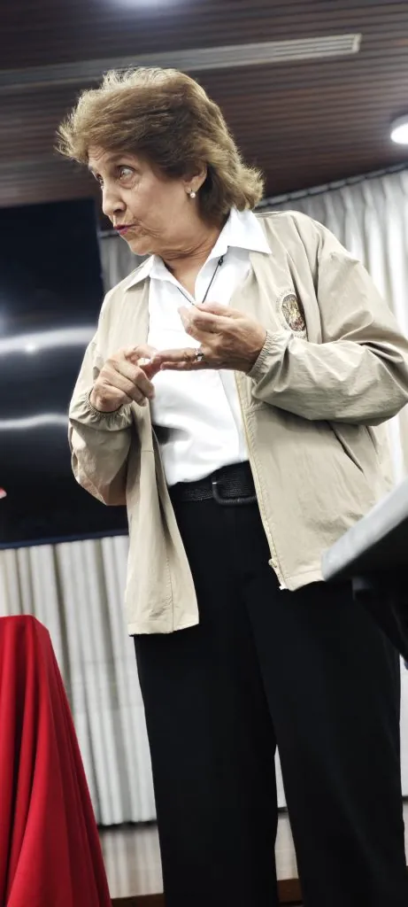
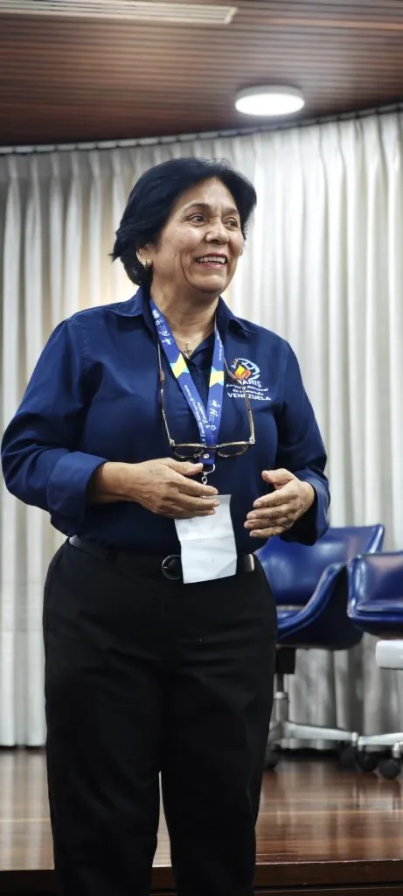

RealizadoRealizadoAsamblea · Familia
Asamblea Nacional de Pastoral Familiar 2025: «La familia como camino de comunión y renovación»
Tres días en Caracas, del 26 al 28 de septiembre de 2025, para compartir experiencias de pastoral familiar y discernir pasos futuros, en el Año Jubilar.

Datos del evento
- Fecha
- Del 26 al 28 de septiembre de 2025
- Hora
- No publicada en las notas oficiales.
- Modalidad y lugar
- Presencial · Sede de la Conferencia Episcopal Venezolana, Caracas
- Organiza
- Área de Familia y Vida del Centro de Laicos, Familia y Juventud, del SPEV de la Conferencia Episcopal Venezolana
- Estado
- Realizado
Cómo fue
El Área de Familia y Vida juntó a representantes de diócesis y de varios movimientos de apostolado. El lema vino de Romanos 12,2. Fue un espacio para compartir experiencias, mirar con gratitud el camino y discernir lo que viene.
Los asistentes hablaron de una generación de relevo con ganas de trabajar, formarse y evangelizar. Hubo una Eucaristía en el Templo Juan Pablo II por los 35 años de Abrazo en Familia.
Qué se hizo
- Escucharon ponencias sobre pastoral familiar sinodal desde las provincias eclesiásticas.
- Trabajaron la animación bíblica de la pastoral y el vínculo entre las áreas del Centro.
- Elaboraron estrategias para una pastoral más cercana y misionera.
Quién participó
Solo cargos públicos. Los nombres de laicos participantes y de menores no se publican.
- Saritza Roque, directora del Centro de Laicos, Familia y Juventud.
- Un obispo ponente y el subsecretario de la CEV.
- Matrimonios directores y asesores de Pastoral Familiar de las circunscripciones.
Cifras
- Representantes de más de 25 diócesis, según la nota de la CEV del 29 de septiembre de 2025.
Galería

Foto de grupo de los participantes de la Asamblea Nacional de Pastoral Familiar 2025 sobre un patio de ladrillo, con arbustos y un arco de piedra al fondo. Crédito: CEV Medios o Prensa CEV; autor de la foto no indicado (C2). 
Afiche de la Asamblea Nacional de Pastoral Familiar, 26, 27 y 28 de septiembre, «La familia como camino de comunión y renovación». Crédito: Pieza gráfica de la CEV, el Departamento o el Centro; sin autor nombrado (C1). 
Ponente en el atril durante la asamblea, con la bandera de Venezuela al fondo. Crédito: CEV Medios o Prensa CEV; autor de la foto no indicado (C2). 
Un sacerdote dirige unas palabras con un libro en la mano ante la bandera nacional. Crédito: CEV Medios o Prensa CEV; autor de la foto no indicado (C2). 
Una mujer expone con micrófono en la sala de la asamblea. Crédito: CEV Medios o Prensa CEV; autor de la foto no indicado (C2). 
Una participante habla con micrófono ante el grupo. Crédito: CEV Medios o Prensa CEV; autor de la foto no indicado (C2). 
Una mujer con credencial interviene en el salón de la asamblea. Crédito: CEV Medios o Prensa CEV; autor de la foto no indicado (C2).